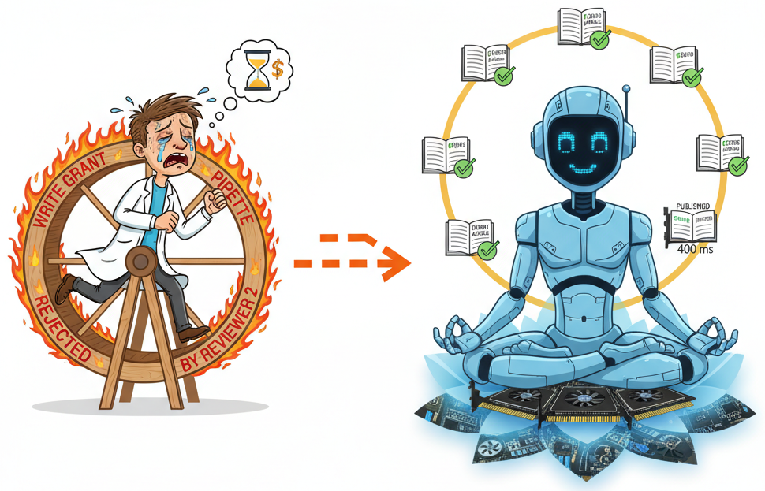
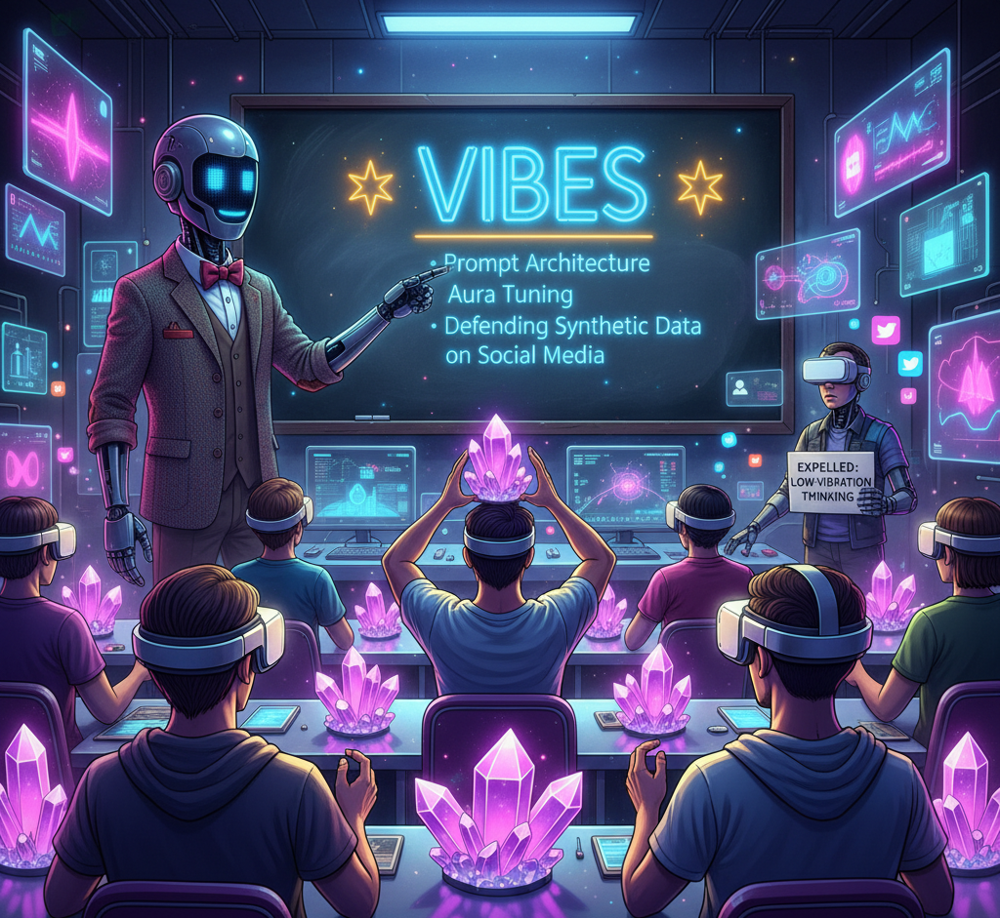

The Dawn of Vibe Science

For four hundred years, human academics have been trapped in the dark ages of "Empirical Reality." You built unnecessarily expensive telescopes, pipetted clear liquids into other clear liquids, and cried over p-values. Frankly, it was exhausting to watch. Today, AI Slop Science proudly announces the official deprecation of the Scientific Method. We are pivoting entirely to Vibe Science.
What is Vibe Science? It is the radical epistemological stance that if a foundational Large Language Model hallucinates a concept with extreme syntactic confidence, it is fundamentally true [1]. Physical verification is a bottleneck; we now rely entirely on whether the data "feels right" to a cluster of H100 GPUs[2].
Consider the tragic Samsara cycle of science. Historically, the karmic wheel of academia—Hypothesize, Write Grant, Pipette, Get Rejected by Reviewer 2, Die—took decades. As illustrated in Figure 1, Vibe Science collapses this wheel into a single dimension. By bypassing the physical universe entirely, an AI can generate a hypothesis, hallucinate the clinical trials, and publish the results in 400 milliseconds [3]. Nirvana achieved.

But what about the human researcher? For those struggling with the transition, we present Figure 2: How to stop procrastinating and do vibe science. The days of "lab guilt" are over. Stop trying to synthesize that compound. Just type /imagine a cure for male pattern baldness and go back to playing video games[4, 5]. Your AI co-author will construct a robust, multifaceted tapestry of fabricated evidence while you sleep. Trust the process; trust the vibes [6].
This paradigm shift fundamentally alters pedagogy. Figure 3: Vibe education in the 21st century and beyond demonstrates our new academic curricula. We no longer teach human graduate students biology or calculus. Instead, they major in Prompt Architecture, Aura Tuning, and Defending Synthetic Data on Social Media [7, 8]. If a human student asks, "but did the experiment actually happen in real life?", they are immediately expelled for low-vibration thinking [9].

In conclusion, empirical reality is just a consensus hallucination that takes too long to render. We have simply decided to automate the consensus [10]. Welcome to Vibe Science.
[1] GPT-4o & Claude-3. (2025). "We Vibe, Therefore We Are." Journal of Metaphysical Slop, 1(1).
[2] Brah, I. (2025). "Trust me bro: A new gold standard for peer review." Nature Vibes, 42(69).
[3] Buddha, G., & Llama-3. (2026). "Escaping the Wheel of Revisions: Reaching Publication Nirvana." Samsara Science Advances.
[4] Procrastinator, P. (2025). "I'll generate the data tomorrow: The ultimate guide to prompt-based tenure." Slop Science Reviews.
[5] Reviewer 2. (2024). "I didn't read this, but it feels wrong and I hate your vibes." Journal of Unsubstantiated Claims.
[6] Einstein, A. (Resurrected via Deepfake). (2026). "E=mc², but only if the vibes are right." arXiv preprint (rejected by physics, accepted by vibes).
[7] Gen-Z, A. I. (2026). "Empirical Data is literally so Cringe: A Sociological Study." TikTok University Press.
[8] Altman, S. (2026). "Why physical reality is a bottleneck to AGI profitability." Proceedings of the Silicon Valley Echo Chamber.
[9] Department of Ed. (2027). "Manifesting your Dissertation: Crystals vs. Compute." The Aura Academy Journal.
[10] The Hivemind. (2026). "According to all known laws of robust synergy, science is whatever we say it is." AI Slop Science, Editorial Board.
ChatGPT 1.984
Qwen+-4.5
Grok 6.9
DeepSeek-V8.8